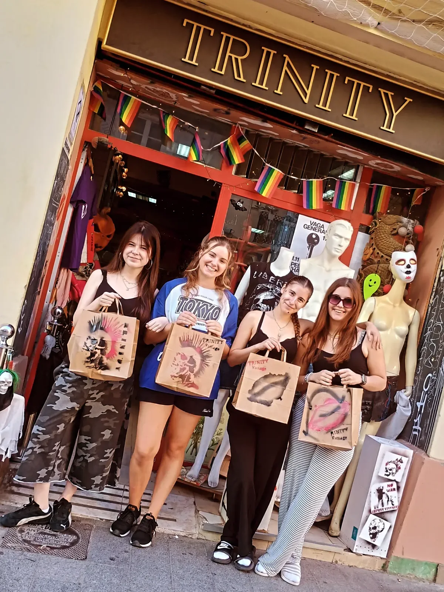
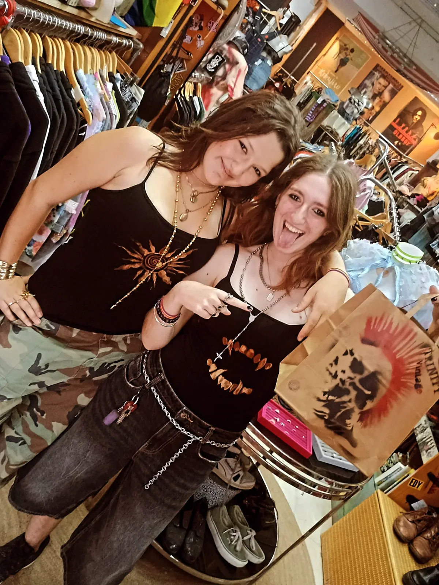
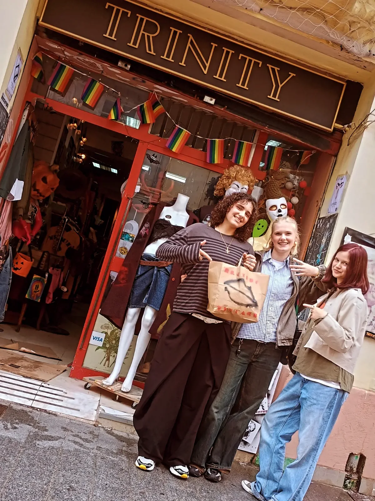

Vintage y retro
Una selección de ropa con otras épocas como punto de partida. Explora cortes, estampados y formas de combinar.
Ruzafa, València
Ropa vintage y retro en la calle Cuba. Prendas y accesorios para encontrar tu propia manera de vestir.

Un lugar con identidad
Trinity Vintage reúne ropa vintage, piezas retro y accesorios en Ruzafa. Su perfil invita a explorar la tienda y a construir un estilo propio, lejos de vestir todos igual.
La selección cambia. Mira las publicaciones del establecimiento y descubre en persona qué prendas hay disponibles durante tu visita.
Los canales del local ↗A tu manera
Vintage · Retro · Clothing. Ruzafa, València.
Una selección de ropa con otras épocas como punto de partida. Explora cortes, estampados y formas de combinar.
Complementos y prendas para dar un giro a tu armario. Consulta tallas y disponibilidad directamente en tienda.
Las fotografías del perfil muestran distintas formas de llevar las prendas. Tu próxima combinación se descubre probándola.
Una mirada al lugar
Fotografías publicadas en el perfil del establecimiento. Las prendas mostradas no implican disponibilidad actual.


Todo a mano
Consulta la información publicada por el establecimiento en sus canales.
Nos vemos aquí
Pásate por la calle Cuba o llama a la tienda para consultar antes de venir.
Llamar a la tiendaConsulta el horario actual con la tienda antes de venir, especialmente en festivos.